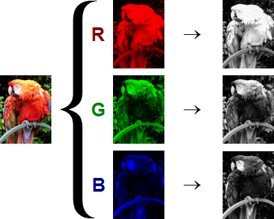

Types of Images
The images are classified into three main categories which are mentioned below.
- Binary Image
- Grayscale Image
- RGB Image
Let us discuss each one of them now.
Binary Image
In a binary image, each of the pixels are either black or white. There is no other color. Below is an example for a binary image.

Typically in a binary image, black is represented by the value 0 and white is represented by the value 1. This way, a binary image can be stored in a 2D matrix with just the numbers 0 and 1 in it. Below is an example of the same.

Grayscale Image
In a grayscale image, apart from having white and black; you can also have various shades of gray. For an 8-bit grayscale image, the value of each pixel varies from 0 to 255 where 0 represents pure black; 255 represents white; and all the values in between represent various shades of grey. The same is depicted in the image below for clear understanding.

The grayscale image is stored in a 2D matrix with the values of each element varying between 0 and 255. An example of a grayscale image is shown below.

Here's the image of Lena in grayscale.
RGB image
RGB stands for red, green and blue. Before getting into what an RGB image consists of, we have to understand how each and every color can be represented.
Representation of colors
Each of the pixels is represented by a single color and every color can be represented as a combination of three colors- red, green and blue. For example, white is the presence of all three colors: red, green and blue whereas black is the absense of these colors.
Below is the image of the popular color pallete in Microsoft Paint. You can select any color in the box in the right half of image. It's corresponding red, green and blue values are represented at the left bottom of the screen.
This is a 24-bit image, i.e., 8 bits in red, 8 bits in green and 8 bits in blue. Because it is 8 bits- the value of each color can vary between 0 and 255. 0 represents the absense of the color and 255 represents the presence. In this image, the color choosen has a value of red 255, green 128 and blue 64. It means the color has full red component, half green component and quarter blue component.
RGB Image Matrix
By using the above concept, any color can be represented as a combination of three colors- read, green and blue. Similarly, any image can be represented as combination of three layers. This is depicted in the image below.

Fig. The three color layers of the image are shown on the right in grayscale form
If these images are stored in a matirx, the size with be 200 x 150 x 3 where 3 represents the three layers.